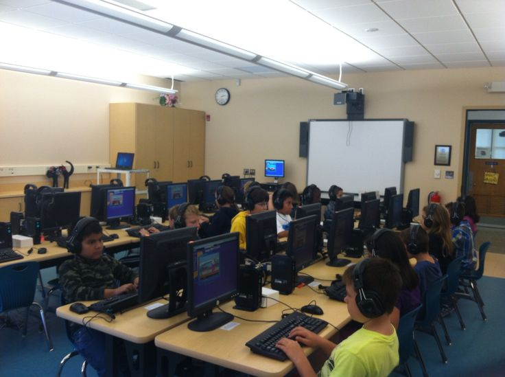
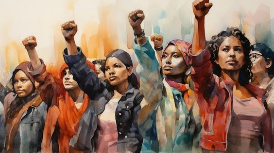

At Future Foundations, our projects bloom from the unique needs of the communities we serve. Each initiative is crafted with the hands and hearts of local residents, ensuring it brings the greatest possible impact.
Offering free classes and skill-building workshops to help local youth and adults gain valuable knowledge and employable skills.
Partnering with local clinics and health professionals to provide free health check-ups and support services. We also conduct regular health workshops in underserved areas, teaching residents about nutrition, hygiene, and disease prevention.
Promoting sustainable practices by hosting community clean-ups, tree-planting events, promoting environmental awareness and workshops on renewable energy.
This initiative trains local farmers in sustainable agricultural practices, helping them increase crop yields while protecting the environment.
Our mentorship program pairs young people with experienced mentors who guide them in developing life skills, career planning, and personal growth.
Encouraging creativity and self-expression through art classes, music workshops, and theater productions. This program aims to nurture artistic talents and provide a platform for local artists to showcase their work.
Find out how you can get involved by signing up today. Together, we can make an even bigger impact!
Providing access to computers and the internet for underserved communities, along with training on digital literacy and online safety.
Providing support and resources for women through vocational training, financial literacy workshops, and entrepreneurship programs to help them achieve economic independence and personal growth.
Organizing sports events and providing training facilities to promote physical fitness and teamwork among youth.
Offering assistance and companionship to senior citizens through home visits, social activities, and health monitoring.